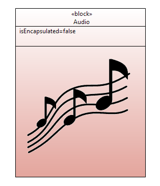
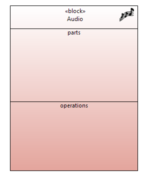
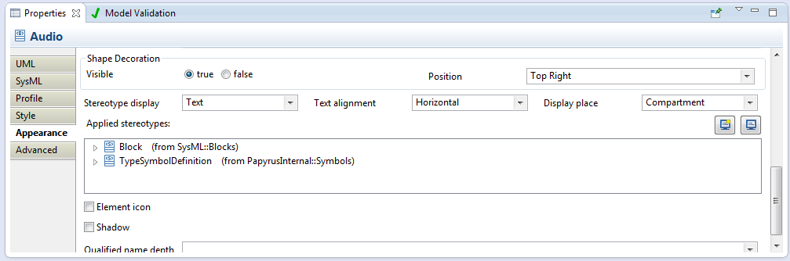
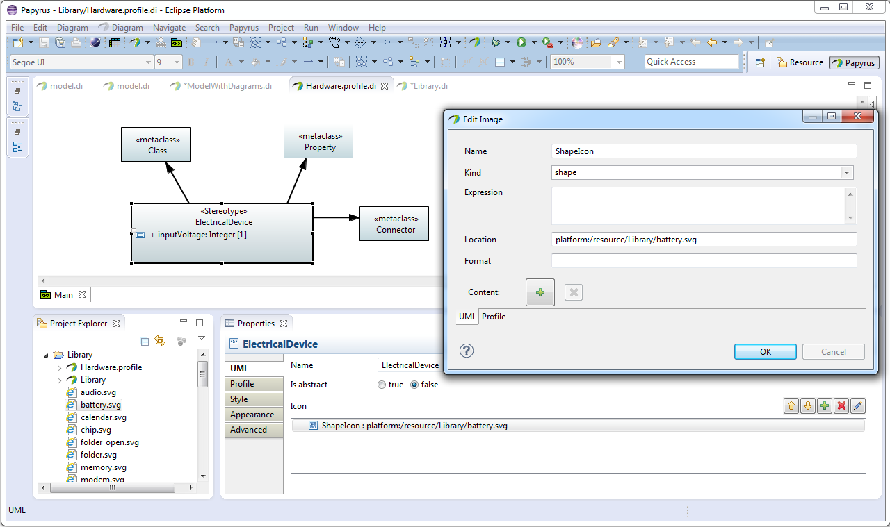
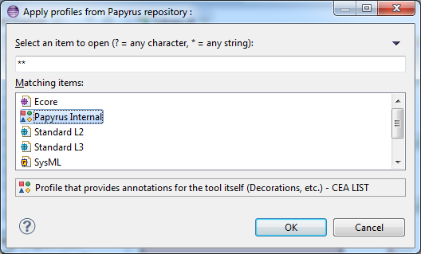
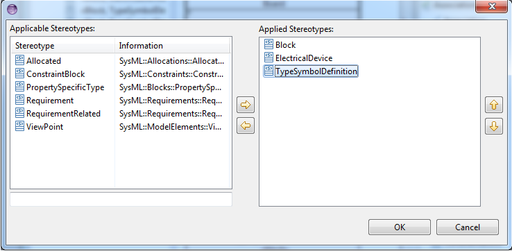

This short documentation will present the support for custom representations available to Papyrus users
The goal of the sympbol support in Papyrus is to give users access to some custom representations. They can use their own representation, i.e. their own svg files, in their diagrams, so the model can be easily read and understood. SVG file format was used, as this vectorial format scales easily.
There are 2 manners to display symbols on the diagrams.
For all nodes, like Package or Class in a Class diagram, it is possible to display the symbols in a "shape" compartment. This compartment can be displayed/hidden using the context menu on the diagram

To display/hide shape compartment:
Hint: you can also select the node and press 'Ctrl'+'F5' simultaneously to display the Show/hide Compartment dialog
For all Nodes in diagrams, it is possible to display the available symbols as decorators. The decorators are small representations depicted above the figures. for example, validation errors and warnings are displayed as decorators on Papyrus diagrams.

The Appearance tab of the properties view allows user to toggle the visibility of decorators, and the location of the display on the figure. There are 9 positions on the figure (north/east/south/west and all valid combinations)

Hint: if the properties view is not displayed in your Eclipse environnement, you can display it using context menu on a diagram => show Properties view.
This section explains how symbols can be associated to model elements. There are currently 3 ways to define specific symbols for model elements.
UML offers the possiblity to associate new icons to stereotyped elements, via the image Property of Stereotypes. In Papyrus, one of this image can be a shape. This shape will be availalbe for any node representation of a steoretyped element.
On the property view of a Stereotype, you can associate an image to the stereotype

This shape wil now be available on all elements that are stereotyped by this given Stereotype.
Hint: You can have more documentation about profiles in Papyrus on the website, users corner
By default, Actors and TypedElement that are typed by an Actor have a stickman symbol associated.

The last way to associate symbols to model element is to apply the PapryusInternal profile.
Steps:



As soon as the Internal profile is applied, the user can apply a specific stereotype on Type elements. On this stereotype, a field allows user to define a symbol for the stereotyped Type. Then the symbol will be available for all representations of this Type and the representations of TypedElements typed by it.
Steps:



Currently, Papyrus supports SVG and PNG files.
Papyrus relies on a SVG render provided by the GMF project. This renderer do not support all the funny things provided by the SVG format. For example, it is known that the gradients are not supported. If a svg file has some gradient in its definition, it will not be displayed at all by Papryus.
Paths can be expressed as Eclipse URIs (Either absolute or relative to the current model), e.g:
platform:/plugin/org.eclipse.papyrus.uml.diagram.common/icons/symbols/actor.svg
=> This is a svg image contained in the plug-in {oep}.uml.diagram.common
Images/logo.svg
=> This is a svg image contained in an images/ folder next to my current model
platform:/resource/my-project/images/logo.svg
=> This is a svg image contained in the project “my-project”, in the current workspace
file:/home/images/logo.svg
=> This is an absolute filesystem URI
Yes. Papyrus relies on the Eclipse extension point framework to associate symbols with elements. It is possible for users to declare new extensions to provide their own symbol associations. See the extension point: org.eclipse.papyrus.infra.gmfdiag.common.shapeProvider for more information.